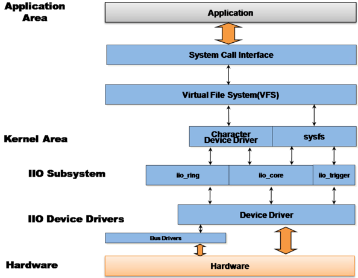

设计说明
2 Dec 2024
源代码位于：drivers/iio/adc/artinchip_adc.c
模块架构
IIO
工业 I/O，是 Linux 内核中专用于处理模数转换器（ADC）和数模转换器（DAC）的子系统，最初创建于 2009 年，提供了统一的框架来访问和控制各种类型的传感器，并且为用户态提供了标准的接口。
目前 IIO 支持的设备类型包括：ADC/DAC、加速度计、磁力计、陀螺仪、电流/电压测量芯片、压力传感器、温度传感器、湿度传感器、光传感器、压力传感器等。
整个 IIO 软件框架可抽象为下图：

-
IIO 设备会提供字符设备（支持触发缓冲区）和 Sysfs 节点作为用户态的访问接口。
-
一般情况下，每个通道对应一个 sysfs 节点文件。
用户空间的设备文件名举例
-
/sys/bus/iio/iio:deviceX/
-
/dev/iio:deviceX